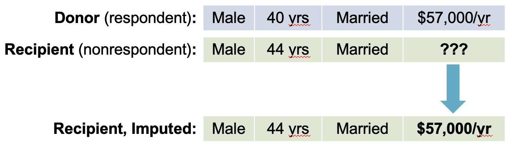
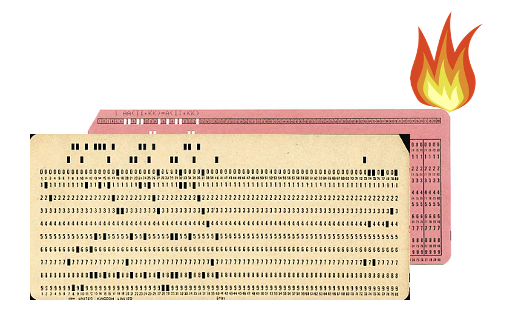
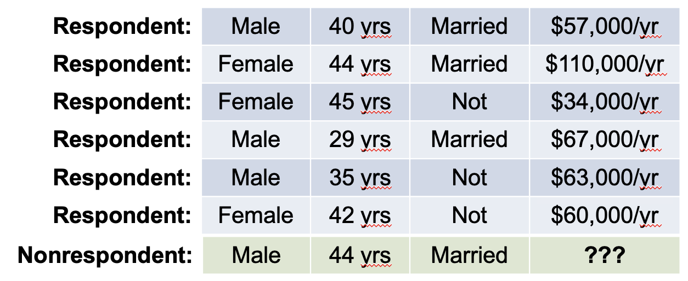
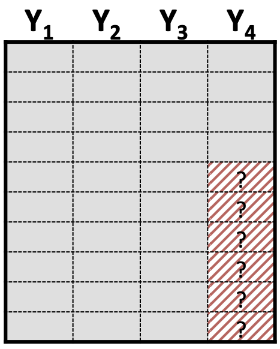
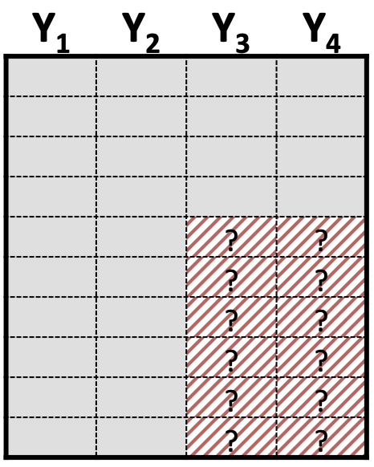
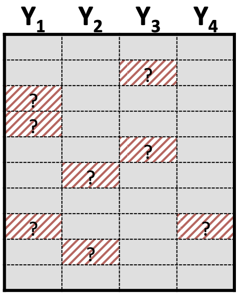

Imputation
for Nonresponse in Surveys
PUBHBIO 7225 Lecture 19
Outline
Topics
What is imputation?
When and why would we impute?
Overview of some imputation methods
Hot Deck Imputation
Sequential Regression Imputation
Single vs Multiple imputation
Activities
- 19.1: Exploring Imputation
Readings
- OPTIONAL: Andridge, R.R. and Little, R.J., 2010. A review of hot deck imputation for survey non-response. International Statistical Review, 78(1), pp.40-64. (PDF on Carmen)
Assignments
- Group Progress Report 3 due Thursday 11/6/2025 11:59pm via Carmen
What is Imputation?
Imputation = filling in missing data values (in a principled way) to create a “complete” data set
| Y | Z |
|---|---|
| 15 | 11 |
| 25 | 13 |
| 10 | |
| 13 | 8 |
| 13 | 7 |
| 9 | |
| 16 | 10 |
| 20 | 13 |
| 21 | 10 |
| 8 |
→
| Y | Z |
|---|---|
| 15 | 11 |
| 25 | 13 |
| 20 | 10 |
| 13 | 8 |
| 13 | 7 |
| 13 | 9 |
| 16 | 10 |
| 20 | 13 |
| 21 | 10 |
| 15 | 8 |
Important point:
The goal of imputation is not to perfectly replicate the data value that would have been observed
The goal of imputation is to replace missing values by “plausible” values in order to make use of all available information (i.e., other info we have about a survey respondent) so that population inference is improved (relative to discarding missing data)
When and Why We Impute (in sample surveys)
Imputation is used across many application areas
General benefits of imputation:
Potential for gain in efficiency relative to complete case
Potential for reduction in nonresponse bias relative to complete case
- In general:
- Imputation is for item nonresponse
- Weighting adjustments are for unit nonresponse
For complex sample surveys, the two most common reasons for imputing are:
There is missing data on variables collected on the survey that will be used for weight adjustments (post-stratification, raking, etc.)
Key survey outcomes have missingness and we don’t want different analysts to get different answers
- Generally speaking, imputation for both of these reasons will be done by the survey producers (e.g., CDC) and the imputed data is provided to secondary data analysts (often with imputation “flags” so you know which values have been imputed)
Examples of Imputation in Large Scale U.S. Surveys
-
Items imputed: age, sex, Hispanic origin, race, educational attainment
Why: variables needed for post-survey weight adjustments (raking)
National Survey of Children’s Health (NSCH)
Items imputed: household tenure, child’s sex, child’s race, child’s hispanic origin, adult 1’s education, household size, family poverty ratio
Why: variables used for post-survey weight adjustments (raking)
National Immunization Survey - Child
Items imputed: sex, Hispanic origin, race, health insurance status, and first-born status of the child; education level, age group, marital status, and mobility status of the mother; income-to-poverty ratio of the household
Why: variables used for post-survey weight adjustments (raking)
Imputed Items Tend to Have Low Nonresponse Rates
Demographic variables are the most commonly imputed (for use in weight adjustments)
Item nonresponse for these items tends to be low
Example: National Survey of Children’s Health (NSCH) – 2022
![A table titled 'Table 15. Imputed Variables and Their Imputation Flags' shows a list of variables from the National Survey of Children's Health (NSCH) dataset that were imputed. The table has three columns: Variable, Missing Rate, and Imputation Flag Variable. The Variable column lists the characteristic and variable name for each imputed variable, such as 'Household tenure (TENURE)' and 'Child's sex (C_SEX).' The Missing Rate column shows the percentage of missing data for each variable. For example, 'Household tenure' has a 1.45% missing rate, while 'Family poverty ratio (FPL) has the highest rate at 19.53%. The Imputation Flag Variable column lists the corresponding flag variable for each variable, such as 'Flag for Household Tenure (TENURE_IF),' which indicates whether the data for that variable has been imputed.](figures/NSCH2022_imputedvars.png)
Screener sample size = 127,726
- Most missingness: Child’s race – 2,568 missing (2.01%)
Topical survey sample size = 54,103
Most missingness: Poverty ratio – 10,567 missing (19.53%)
Next most missingness: Adult education – 1,860 missing (3.44%)
Very low rates of missingness for all demographics except poverty level
Poverty level based on income – usually high nonresponse for income on all surveys!
Source: 2022 NSCH Methodology Report, p.40
Some Common Imputation Methods (for sample surveys)
- There are a lot (a semester’s worth) of imputation methods – here are just two:
Hot Deck Imputation
Most common imputation method for sample surveys
Examples of surveys that use it (or a variation):
Sequential Regression Imputation
Less common imputation method for sample surveys
Examples of surveys that use it:
National Survey of Children’s Health
(for income/FPL)National Health Interview Survey
(for income)
Hot Deck Imputation
Hot Deck Imputation = Replacing missing values of one or more variables for a nonrespondent (“recipient”) with observed values from a respondent (“donor”) that is similar with respect to characteristics observed for both

Why is it “Hot”?
Throwback to punch cards for computers
Donors come from cards currently being processed (“hot”)
Alternative: “Cold” deck = data from external data set

Basic Steps of the Hot Deck
Identify possible donors: Create set of possible donor(s) for each recipient
Select a donor: Select a single donor for each recipient
Impute: Use donor’s observed value(s) to fill in recipient’s missing value(s)
Example: 2017 Ohio Medicaid Assessment Survey (link)
25 variables imputed one at a time using hot deck imputation1
- Impute region based on phone type
- Impute adult gender based on (imputed) phone type and region
- Impute adult race based on (imputed) phone type and region and adult gender
Why Hot Deck Imputation is Popular for Surveys
Only plausible values can be imputed
- You’re only imputing data values that were actually observed in the survey
Less sensitive to model misspecification than an imputation method based on a parametric model (though there is an implicit model)
Remember, we treat \(y\) as a fixed quantity and don’t make assumptions like \(Y \sim N(\mu, \sigma^2)\)
Thus, survey statisticians tend to try to avoid the use of (parametric) models
Extends to imputing multivariate missingness (preserving associations)
If multiple variables are missing for a recipient, can impute them together from the same donor
Example: Both race and Hispanic origin missing – could impute the pair, meaning we preserve association between race and ethnicity
Note: I could spend (and have spent!) a full day talking about hot deck imputation and its variations…my hope is that you understand the basic idea of how hot deck imputation works and recognize it when you see it described in data user guides!
Sequential Regression Imputation
(the sometimes-used imputation method for surveys)
Sequential Regression Imputation = Replacing missing values of one or more variables for a nonrespondent with a draw from a predictive distribution that is based on a regression model

To impute missing income value:
Predict income using gender, age, and marital status as covariates in regression model
Obtain prediction for the nonrespondent’s income based on the model
Add extra “noise” to both the regression coefficients and the imputed value
This is a simplification of a complex process!
Imputation Is Complex!
Lots and lots of possible methods…
Added complexity of different patterns of missing data:


![An illustration of a dataset with monotone missing data. The dataset is a grid of rows and columns, with the columns labeled Y1, Y2, Y3, and Y4. The missing data forms a staircase or stepped pattern. Specifically, data is missing in column Y4 for the bottom rows. Then, for a lower set of rows, data is missing in both columns Y3 and Y4. Finally, for the very bottom rows, data is missing across columns Y2, Y3, and Y4. The missing cells are indicated by a shaded pattern and question marks. This pattern suggests that if a value is missing for a particular variable, all subsequent variables for that same record (row) are also missing.](./figures/datasetDiagramMonotone.png)

- Want to know more about missing data and imputation?
- We have a whole course: PUBHBIO 7240/STAT 6520 (Applied Statistical Analysis with Missing Data)
Activity 19.1
Exploring Imputation
What You Just Did: Single Imputation
Single Imputation: Replace each missing value with one value
- Create one completed data set
- Analyze that one data set as usual
Each missing income value was replaced with one value
But, when you analyzed the imputed data, you were effectively treating the imputed data as if it had been actually observed!
Look at the class results… what do we see about the estimated precision (SEs) for the data sets with imputed data compared to the “oracle” data?
- No “penalty” for the fact that we imputed instead of observed some values — but shouldn’t there be?
Single vs Multiple Imputation
Multiple Imputation: Replace each missing value with multiple values
Create multiple completed data sets
Analyze each data set separatedly and combine the resulting estimates using special combining rules (“Rubin’s Rules”)
Resulting inference properly treats the imputed data not as if it were known1
Multiple imputation more often used with non-probability/convenience samples (e.g., observational studies, clinical trials)
Applying multiple imputation in survey context is (more) complicated — have to properly account for the sample design
Some publicly available surveys do release multiply imputed data — most often income data (e.g., NSCH, NHIS) — why might this be?
PUBHBIO 7225